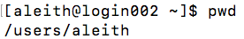

Linux Explication¶
This document constitutes a more elaborate discussion of the principles described in our Linux presentation, presented in a structure more resembling a narrative. The code within can be copied into a terminal and directly executed.
THIS PAGE IS A DRAFT; REVISIONS AND SCREENSHOTS WILL BE ADDED SOON
To list all files in the current directory, type:
ls
Part I: Introduction to Linux¶
The original way to interact with a computer, dating back to the 1960s - so why use it in this day and age?
The command line offers greater flexibility compared to a GUI - you can choose what to do rather than being restricted by other developers’ choices
Command line utilities are easy to automate, allowing for more efficient data analysis and saving you from annoying busy work
At first, the bare-bones ‘retro’ appearance of the CLI is intimidating - eventually, though, it is faster to use than a GUI for many tasks
To understand how to use the CLI, it is important to learn a few simple commands that will let you navigate the system - memorizing these will make life much easier
These commands will be illustrated with a screenshot from Brown’s compute cluster
The first command to remember is:
pwd
It stands for ‘print working directory’, and does exactly that - displays the file path of the directory (folder) you’re currently inside
The next command is:
ls
`
[aleith@login002 ~]$ ls
4-1 Figure2c.eps problem set 1
5b finalgenerate profile_backup
anaconda helloworld.Rout qiime2-2018.2-py35-linux-conda.yml
batch.script hist_thetahat67.fig query_sim.csv
batch_scripts hist_thetahat6.fig query_sim.mat
bianca7.m hist_thetahat7.fig R
cbc keys README
CCVREADME lib refGene.txt.gz
class linux_tutorial scratch
class.err matlab_crash_dump.15109-1 screen_check.sh
class.out matlab_crash_dump.20855-1 TERMS
cluster.workspace.RData matlab_crash_dump.20855-2 test_synapse
conda matlab_crash_dump.24860-1 test.txt
cronlog.log matlab_crash_dump.7447-1 tophat.batch
cron_screen_log.txt modules tophat.err
data mycloud tophat_out
Desktop ncbi tophat.out
Downloads ncbi_error_report.xml trichotomized.score.R
Figure2a.eps pathdef.m untitled.m
Figure2b.eps pkgs
`
It stands for ‘list’, and also does what it sounds like: lists the contents of the current working directory.
When using ‘ls’, you will note that different colors are used to depict the contents of your working directory. These vary by the version of Linux you use; the following information corresponds to Brown’s compute cluster
Dark blue: a directory (folder)
Light blue: a symbolic link (analogous to a shortcut on Windows)
Black: a file
Other colors have niche uses that you are unlikely to encounter at this stage
Many Linux commands have options that change their behavior, and ‘ls’ is no exception
These options are set using a minus (-), directly followed by the letter associated with that option
For example, by default, ls only shows non-hidden files. To show all files, you would type:
ls -a
Below, you can see the radically different output of ls -a relative to ls
Note that on Linux, hidden files and directories always begin with a ‘.’
The third fundamental navigation command is:
cd
This command stands for ‘change directory’ and is what allows you to actually move around.
Some directories can have long, complicated names, making it difficult to type them out
The CLI allows so-called ‘tab completion’ - when typing part of a directory’s path (or a file’s path), pressing ‘tab’ will cause the rest of the name to be automatically filled in
If more than one item matches what you’ve typed, it will autocomplete up to the point of ambiguity and then you will need to type more and type ‘tab’ again
Basic File Structure Overview
There are two fundamental ways to refer to a file or directory on Linux: a relative file path or an absolute file path
A relative file path is the location of a file with respect to your current working directory (and will therefore change based on where your working directory is)
An absolute file path, sometimes described as a ‘full file path’, is that file’s true location on the computer and is invariant
There are several pieces of shorthand notation that are often used in defining a relative file path . stands for the current working directory (i.e. the output of pwd)
.. stands for the parent directory, i.e. the directory that contains the current working directory
~ (‘tilde’) stands for the current user’s (i.e. your) home directory, the location of which is dependent on the system configuration
The absolute file path of a file is its location with respect to the root directory
The root directory is the highest level directory on the computer, and is denoted by the path ‘/’
File paths beginning with ‘/’ are absolute paths
The following two paths are very different:
anaconda/bin/ is the ‘bin’ directory inside the ‘anaconda’ directory inside the current directory
/anaconda/bin/ is the ‘bin’ directory inside the ‘anaconda’ directory inside the root directory
To avoid ambiguity, it is generally a good idea to stick to absolute file paths whenever possible
File Manipulation
We will now cover the basic tenets of file manipulation using the CLI
First, however, we must briefly address a technical topic that is likely unfamiliar: file permissions
If you’ve ever had to type your administrator password on Windows or OSX to perform an operation, you’ve encountered file permissions before
File Permissions
There are three fundamental permissions: read (r), write (w), and execute (x).
There are also three sets of permissions: those belonging to the user (u), those belonging to the user’s group (g), and those belonging to everyone else (o) on the system
To view a file’s permissions on Linux, you can type:
ls -lh
-rw-r–r– means ‘user has read and write permission’, ‘user’s group has read permission’, and ‘everyone else has read permission’ aleith cbc means this file is owned by user ‘aleith’ from group ‘cbc’
0 refers to the file’s rounded file size
The last-modified date is also included for each file
A file’s permissions can be changed by the owner using the command:
chmod [permission to change] [target]
For example, user ‘aleith’ can give himself execute permission (‘u+x’ - add execute permission to user) on ‘randomfile.txt’ using the following command
Note that a file for which you have execute permissions will be colored green
Execute permission is largely irrelevant for a text file, but it is vitally important for any script that is to be run; newly-created files often do not start with execute permission even when you create them yourself
The command:
chown [new owner] [file]
will transfer ownership of a file to the user specified as ‘new owner’
The command:
chgrp [new group] [file]
will transfer the file to another group without changing the user. As users can each be members of multiple groups, this command is often used to transfer a file from one of your own groups to another
Interacting with Files
To create a new directory from the command line, simply type:
mkdir [directory name]
This command, naturally, means ‘make directory’
Directories created in this manner cannot contain spaces, as the CLI will interpret any space as the end of the directory’s name
To move a file, one can use the following command:
mv [target] [destination]
The ‘move’ command moves ‘target’ to the directory specified as ‘destination’
Files can be copied by typing:
cp [original filename] [new filename]
The ‘copy’ command simply duplicates a file in its entirety
The * character is known as the ‘wildcard’, and it is used to mean ‘anything’
For example,:
ls *.txt
will run ‘ls’ on every file that ends in ‘.txt’. To illustrate this effect, a new file called ‘script.sh’ has been added to our directory
Here, we show two more examples.
First, we list any files beginning with ‘random’:
ls random*
Then, we list any files that start with anything, have a ‘d’ in the middle, and then end with anything:
ls *d*
To view the contents of a file, the less command can be used - it will display the first few lines of the file and allow you to scroll through it. Pressing ‘q’ will close this browser
The cat command will print out the entirely of a file
The echo command prints text to the screen
Redirecting Output
By default, many tools (e.g. echo) will print their output to the screen
The CLI has operators that can change this behavior by redirecting that output
The > [file] operator redirects output to ‘file’, overwriting it if it already exists
The related >> [file] operator appends output to ‘file’
[full page screenshot]
Downloading Files
Linux has two primary commands for downloading files. The simplest is:
wget [url]
It downloads a file as-is, with the same filename, and places it in your current working directory. The alternative is:
curl [url] > [filepath]
Without the ‘> [filepath]’ portion of the command, the contents of the file will be printed to the screen and not saved
[curl page]
[grep page]
The grep command allows us to search through a file for any entries that match a specified pattern:
grep [pattern] [filename]
For example, we can search our (abridged) dictionary for all words containing the letter sequence ‘aar’
The previous example included a fairly specific pattern, ‘aar’, intentionally selected so all matches could fit on screen - but what if that weren’t the case? How can we count the number of matches if there are hundreds of them?
The CLI has an operator that allows us to send the output of one function to another function (> redirects to files, not other functions):
|
This operator is pronounced ‘pipe’
If we want to know how many words in our dictionary contain the letter ‘a’ anywhere, we can combine grep and wc -l using a pipe
If we tried to do so using the wrong operator, we would end up with weird behavior and a file named ‘wc’, since > treats its antecedent as a file name specification
Deleting Files
This ‘wc’ file is not useful, merely containing “dictionary.txt” as text
To delete a file, we use the following command:
rm [filename]
The ‘remove’ command permanently deletes a file. Linux has no ‘Trash’ feature like Windows and OSX do - rm is in fact directly analogous to the ‘Empty Trash’ option on those systems
Miscellanea
Sometimes, it will be necessary to stop a command before it completes (e.g. upon making a typo with a wildcard and copying thousands of files instead of a few)
To interrupt a command, type CTRL+c (this combination is valid on both Windows and OSX - do not substitute COMMAND for CTRL on OSX or it will not work)
One of the most important resources for understanding Linux commands is the manual associated with each command
On most versions of Linux, you can access the manual for a function by typing:
[function] --help
e.g.:
cp --help
Note that this syntax will not necessarily hold for other UNIX-like operating systems such as OSX
The most common error encountered on a Linux system - hands down - is command not found
This error means that the computer does not know how to process what you’ve typed - it could be due to a simple typo, or there could be a bigger issue
A slapdash attempt to look at the cp manual will look like this
[screenshot]
Oftentimes, however, you have indeed typed a valid command but Linux still says ‘command not found’ - how is that possible?
It all comes down to how a command line-based system runs software. Unlike a GUI-based system where every program icon is linked directly to the software, Linux works based on a list of locations to look for program files (‘binaries’) - this list is called the ‘PATH’
To view your PATH, you can type:
echo $PATH
Here, the ‘$’ basically means ‘bash variable’ - PATH is a globally-defined variable on every Linux system
Any binary that is somewhere other than one of the directories inside of PATH must be called by its full file path, and on some systems, that is not possible due to permissions and access control
The contents of $PATH can be modified by editing a certain hidden file in your home directory; however, doing so incorrectly will cause severe problems for your account and make it impossible to run even the basic commands like cd so we will not cover that topic today
Brown’s compute cluster has functionality that will temporarily modify your path in response to something called a module load command, which we will cover in the second half of this talk
Another common error is Permission denied, which occurs when you lack the permissions to perform a given operation
This error usually comes about when you have downloaded a file and it’s been created with weird permissions
To resolve this issue, simply add the requisite permission for the operation you are attempting
We will simulate an example of this error on the next slide
[ss]
Linux has an uncountable number of developers publishing software, and most of these packages have their own unique errors.
It is highly likely that you will encounter unintelligible errors in the course of your work, especially if you are using software written in older languages like Java or C
When encountering such an error, it is advisable to Google the entirety of the error message except for the filename and file path of your data and system
Numerous forums, mailing lists, and blogs discuss how to respond to (almost) any error you might encounter
Part II: Brown’s Compute Cluster¶
Brown has a compute cluster operated by CCV, the Center for Computation and Visualization
CCV offers services to researchers affiliated with Brown
Chief among their resources is ‘Oscar’, the compute cluster itself
A compute cluster is a network of computers (‘nodes’), a subset of which can be temporarily allocated to a single job as a group
These nodes, for all intents and purposes, become a virtual ‘supercomputer’, pooling resources for the designated task
Users can specify their computational needs, which determines how many nodes are allocated for that task
Once the task is finished, the nodes are released back into the pool and can be used by other users
To connect to Oscar, run the command:
ssh [user]@ssh.ccv.brown.edu
The ‘secure shell’ command creates a sort of virtual link between your terminal and a terminal on the remote machine, meaning your terminal can interact with the remote machine as though it belonged to that machine
Once you type the above login command, you will be prompted for your password
If you plan to use Oscar to print any graphics to the screen, you must use a slightly different command:
ssh -Y [user]@ssh.ccv.brown.edu
The ‘-Y’ option will enable graphics forwarding. It is necessary to use any application with a GUI e.g. Firefox, RStudio, or the typical Matlab environment
Without specifying ‘-Y’, attempts to display graphics will cause errors
If left idle, ssh connections will timeout
Attempting to type into a terminal connected to a timed-out session will yield ~10 seconds of lag, and then an error message:
packet_write_wait: Connection to [ip] port 22: Broken pipe
Batch jobs running in the background will not be affected by this disconnection, though any interactive jobs running in the foreground (e.g. copying files) will be terminated
CCV also provides a VNC client to connect to Oscar
https://web1.ccv.brown.edu/technologies/vnc
The VNC client resembles a typical remote desktop application and can be used for graphically-focused applications with no special options
When logging into the VNC, you specify parameters and are stuck with them until you end that job
[image]
Transferring Files
CCV hosts a Samba tutorial that is quite long and can be found here:
https://web1.ccv.brown.edu/doc/cifs
Samba generally transfers files faster than SFTP
It is, however, also more likely to go down
Batch Jobs
The question then becomes: how does one actually run anything?
To accomplish this task, the user must create a special type of script called a ‘batch script’, used for running so-called ‘batch jobs’
The batch script is submitted to the ‘resource manager’, a utility that allocates nodes to users
Oscar uses a resource manager called ‘Slurm’
When a batch script is submitted to Slurm, it will put it in a queue based on the computational requirements requested and the user’s job priority The different priority levels and their attributes can be viewed here:
https://web1.ccv.brown.edu/start/account
and are too detailed to reproduce here
Once a requested job gets to the front of Slurm’s queue, it is initialized
This job is run in ‘batch mode’, and happens silently in the background, with no output printed to the terminal
Instead, the batch script is used to specify where the output that would ordinarily appear on the terminal is written to
This output is provisioned into two files, ‘standard out’ and ‘standard error’ (though these names are not entirely indicative - error messages sometimes go to ‘standard out’ depending on how the software is written)
Formatting
All batch scripts require a header that follows a specified format - otherwise, Slurm will be unable to allocate resources to it:
#!/bin/bash The typical shebang statement
#SBATCH --time=144:00:00 The time to request resources for
#SBATCH --cpus-per-task=8 The CPUs to request
#SBATCH --mem=64G The memory to request
#SBATCH -J exac The name under which to list the job
#SBATCH -o exac.out The file for ‘standard out’
#SBATCH -e exac.err The file for ‘standard error’
Other parameters can be found at the following address:
https://web1.ccv.brown.edu/doc/jobs
To submit a batch script with the aforementioned header, type:
sbatch [script name]
You will receive a message stating that your job has been submitted. To monitor its status, type:
myq
The ‘my queue’ command shows any pending or running jobs associated with your own user account. It is useful to check if a job has failed - if you submit an alignment you expect to take days, and after 30 seconds no job is running, it broke
Modules
The method for using software is, on the surface, different from that found on a local computer
To use a given tool, you must first ‘load’ that tool as a ‘module’ as follows:
module load [software name]
e.g. module load samtools
In truth, though, this command just temporarily prepends that software’s location to the beginning of your PATH (try viewing your PATH before and after loading!)
To see a list of all software available on Oscar, type:
module avail
To see all of the modules currently loaded, type:
module list
To unload a loaded module, type:
module unload [software name]
The terminal you see when first sshing into Oscar is running on a ‘login node’, a shared machine with low capabilities
Computationally-intensive jobs run on the login node will immediately die
It is possible, however, to access a node that works like a fully-capable terminal
To access such a node, type:
interact
An example of an interact command is:
interact -n 20 -t 01:00:00 -m 10g
-n refers to the number of cores (20)
-t refers to the time the session will last (1 hour)
-m refers to the memory per node (10 GB)
The full list of options can be found at the following link: